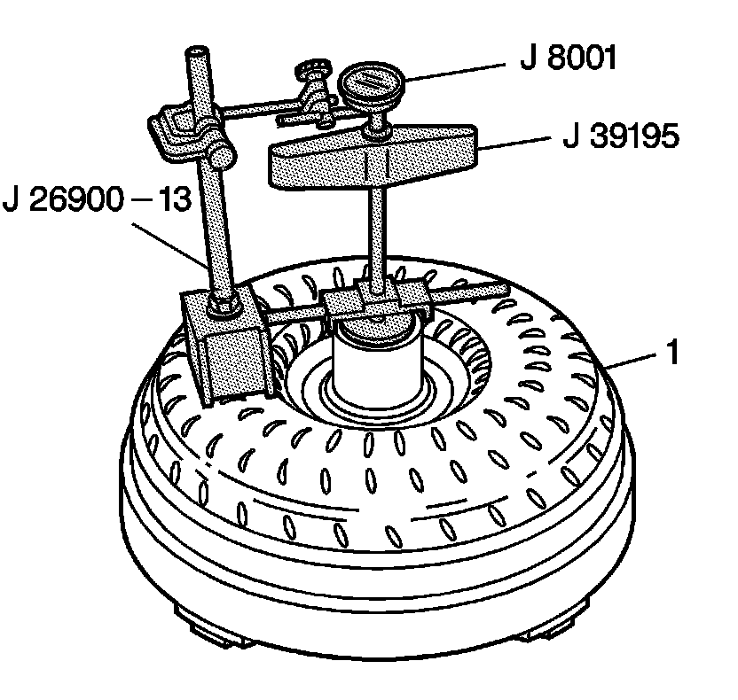

Torque Converter End Play Inspection
Torque Converter End Play Inspection
Tools Required
^ J 26900-13 Magnetic Indicator Base
^ J 8001 Dial Indicator Set
^ J 39195 Converter End Play Check Tool

1. Place the J 39195 base into the torque converter assembly (1). The J 39195 will bottom itself on the face of the stator.
2. Insert the T-handle forcing screw of the J 39195 into the base and hand tighten.
3. Using the J 26900-13, position the J 8001 so that the dial indicator tip is in the center of the J 39195 T-handle.
4. Push down on the J 39195 T-handle to bottom the stator.
5. Preload the J 8001.
6. Set the J 8001-3 to 0.
7. Pull up on the J 39195 T-handle.
8. Inspect the reading on the dial indicator. The total end play should be 0.0-0.38 mm (0.0-0.015 in).
9. Repeat this procedure several times in order to get an accurate measurement.
10. Remove the tools.